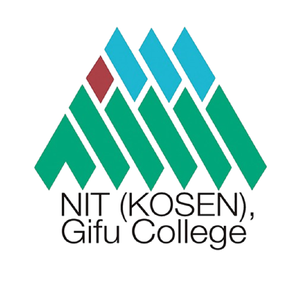

Formation & Expériences

Baccalauréat — NSI, Mathématiques, Maths Expert
Spécialités scientifiques avec une forte composante informatique dès le lycée. Découverte de l'algorithmique, des structures de données et de la logique formelle.
2020 — 2023
BUT Informatique — IUT de Lille
Formation en trois cycles couvrant le développement logiciel, les bases de données, les réseaux, la gestion de projets et les architectures système. Nombreux projets en équipe.
2023 — en cours
Serveur — Restaurant Rock, Kiyosato 🇯🇵
Deux mois en immersion totale dans un restaurant de montagne à Moegi no mura, village isolé dans les Alpes japonaises. Service en salle, prise de commandes et relation client entièrement en japonais — avec seulement quelques bases à l'arrivée. Rythme physique intense, codes culturels du service japonais stricts, isolement géographique réel : quatre défis simultanés qui ont exigé une adaptation rapide et sans filet. Une expérience fondatrice sur le plan de la résilience et de la communication sous contrainte.
Juillet — Août 2024
Stage Erasmus — National Institute of Technology, Gifu 🇯🇵
Stage de 12 semaines dans le laboratoire du Professeur Koji Tajima au sein du département informatique du Kosen de Gifu. Mission principale : développement d'une IA compétitive pour le jeu de cartes Penguin Party en Python (machine learning supervisé). Travail en autonomie totale, dans un environnement multiculturel avec des étudiants japonais et thaïlandais. Participation à des échanges interculturels, sports et activités organisés par l'école.
Avril — Juin 2025